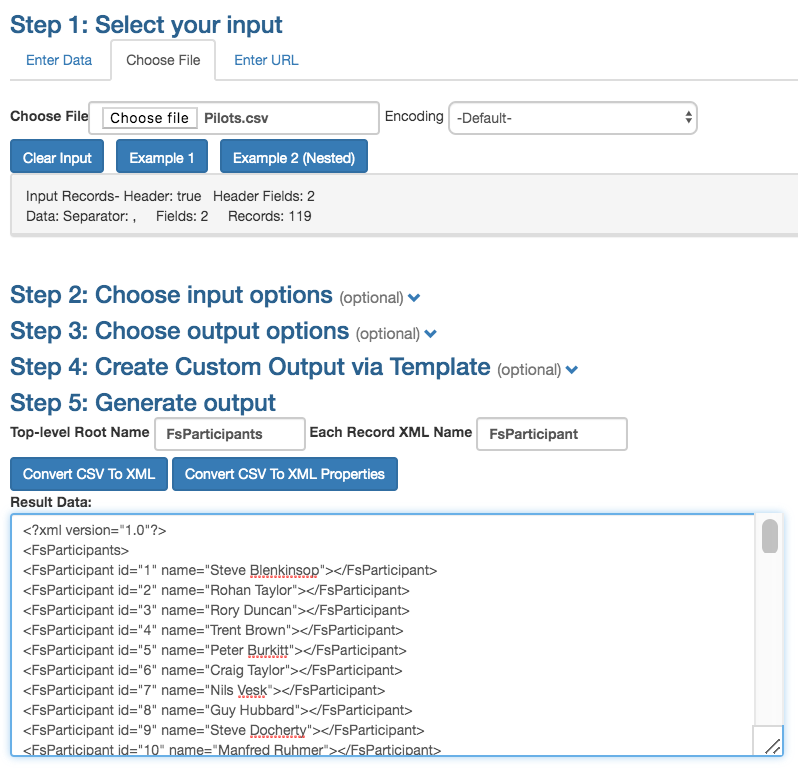
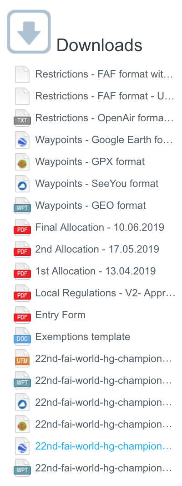

Score Along at Home
July 20, 2019
Score Along at Home
July 20, 2019
I’ve been working on reproducing the scores that FS gives pilots but trying to ignore that app as much as possible, both as a developer with access to its source code and as a user. I didn’t want its influence to steer me in my interpretation of the GAP rules when implementing those rules again from a clean slate with flare-timing.
As flare-timing now covers most situations and applies the rules, rightly or wrongly, it is time to compare it with FS. I found scanning tables, plots or maps to be quicker than picking through files looking for comparative differences. With tables I can compare actual with expected values in adjacent columns and then add a third column for the difference between the two. I don’t particularly care that the colors are garish or that there are too many digits in a cluttered table or that by contrast all FS results are displayed in black. I want to be able to find differences as quickly as possible. A difference of +0.0 doesn’t tell me as much as a difference of +0.002. With flare-timing, the web app, I have at hand a quick visual check that covers most aspects of the breakdown of scoring with tables and plots for reach, effort, leading, time and arrival.
I’m now at the point where using FS or seeing its implementation is not a diversion. Infact I think I need to know more how to use it. Already I have found and fixed some bugs in FS that I found because I was comparing its results with those of flare-timing or because I had interpreted the rules in a different way than the developers of FS had.
As the hang gliding world championships are on in Italy at the moment and the task scores along with settings and *.igc track log files are published daily on airtribune, I thought I would have a go at following along at home. Could I reproduce the published scores using only the published track logs and settings? There is a chance that some needed setting is not published but I won’t find that out unless I try.
First off I’ll need the list of pilots. To get that I can open a task result table in a web browser, select copy the score table and paste what is in the clipboard into a spreadsheet. Deleting all columns but for pilot number and name, I have the list I need except for pilots marked absent from the task. There’s few of those, just four pilots for the first task, so I can add those later using FS and its participants’ list. I save the list I have as *.csv.
id,name
1,Steve Blenkinsop
2,Rohan Taylor
3,Rory Duncan
4,Trent Brown
5,Peter Burkitt
6,Craig Taylor
7,Nils Vesk
8,Guy Hubbard
9,Steve Docherty
10,Manfred Ruhmer
...
120,John Simon
122,Vanni Accattoli
123,Igriza FloraI google “csv to xml” and the first hit is an online tool that does what I need.

I choose the saved *.csv as input and then select FsParticipants as the top-level root name, FsParticipant as the element name and choose to convert the data to properties. I read that to mean create elements with the data I gave in the attributes, not as child elements. It works. The Australian team gets the first batch of pilot numbers.
<?xml version="1.0"?>
<FsParticipants>
<FsParticipant id="1" name="Steve Blenkinsop"></FsParticipant>
<FsParticipant id="2" name="Rohan Taylor"></FsParticipant>
<FsParticipant id="3" name="Rory Duncan"></FsParticipant>
<FsParticipant id="4" name="Trent Brown"></FsParticipant>
<FsParticipant id="5" name="Peter Burkitt"></FsParticipant>
<FsParticipant id="6" name="Craig Taylor"></FsParticipant>
<FsParticipant id="7" name="Nils Vesk"></FsParticipant>
<FsParticipant id="8" name="Guy Hubbard"></FsParticipant>
<FsParticipant id="9" name="Steve Docherty"></FsParticipant>
<FsParticipant id="10" name="Manfred Ruhmer"></FsParticipant>
...
<FsParticipant id="120" name="John Simon"></FsParticipant>
<FsParticipant id="122" name="Vanni Accattoli"></FsParticipant>
<FsParticipant id="123" name="Igriza Flora"></FsParticipant>
</FsParticipants>I download and install FS 2019R1.1, the same version as is being to used to score the worlds champs in Italy and a version that includes some of my contributed fixes. I wish I could link to these issues and fixes but unfortunately both the issues and code are hosted in private on github. I hope these will be made public by FAI-CIVL some time soon to acknowledge the work of volunteer contributors. Here’s a peek at one of the bugs I found and fixed.
I fire FS up and create a new competition, selecting GAP2018 as the scoring formula. From the published results I can check that I have the same settings. The important settings are the nominals, the jump-the-gun factor and maximum time and the turnpoint tolerance that has now narrowed to 0.001 or 0.1% as shown in FS. I save the competition and then open the *.fsdb in a text editor. It is XML and I can now replace the <FsParticipants /> element that is empty with the pilot list I scraped from HTML.
On the airtribune site I’m able to download the pilot *.igc tracklog files for each task but I must pick the turnpoints myself from one of the waypoints file that is also available for download from airtribune. I think the one to use ends in *.FS.wpt.

It looks like I might get stuck with the chore of associating track logs with 100+ pilots but thanks to a naming convention with the pilot number in the name of the files when I choose to check tracklogs FS finds each file for each pilot after I set up the tracklog folder for the task, the folder where I’ve unzipped the track log files.
All goes smoothly from here on, I add the missing pilots inserting them into the pilot list with FS and then marking them as absent (ABS) for the task. There’s a lot of penalties for the first task with many pilots infringing on airspace. I find that I can speed this data entry up by selecting multiple pilots at once and FS will cycle through the selection with the penalty dialog. All but one of the sixteen pilots infringing airspace gets a 100% penalty, the other pilot is penalised 40% for getting within 20m of airspace. I don’t need to enter a penalty for the one pilot that jumped-the-gun, FS will do that for me when I score the task.
With that setup I score the task. At first the results don’t quite match so I check the settings, fixing up a few missing items. Each time I edit the scoring formula settings, FS wipes the scores but it is quick enough to score again.
That’s how to score along at home. I’ve scored task 1, task 2 and task 3. The stock task report templates that come with FS are quite plain whereas the official scores include a lot of sponsor logos, so many infact that the score table is below the fold, a page scroll down the screen. It is good to see so many sponsors but if you want to print your scores and the official ones I found I could select just the tables in the browser and print that selection, not wasting paper or ink printing logos that would be wasted on me anyway.
I was surprised I could redo the scores in so few steps this far away from the action. Speaking of which, the live commentary and coverage at this year’s world champs in Italy have been amazing.